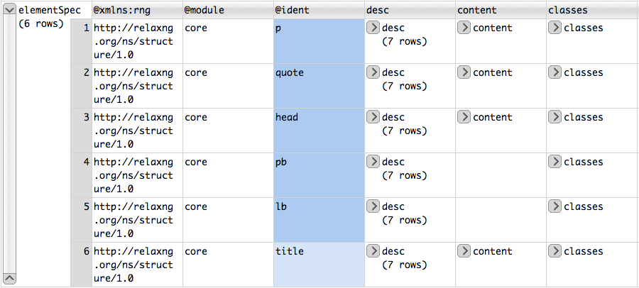
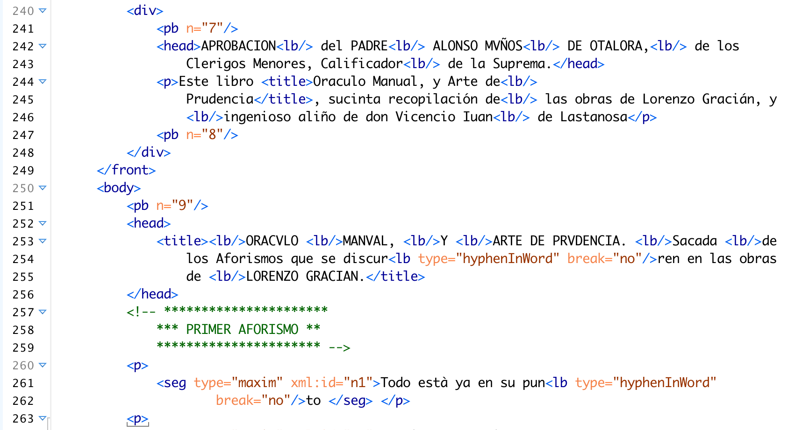
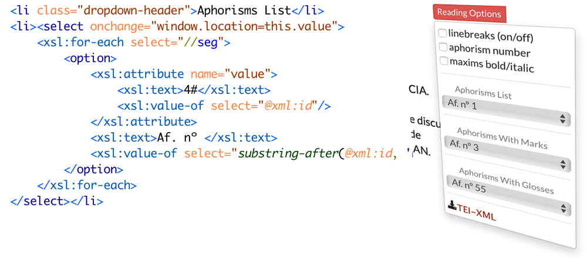
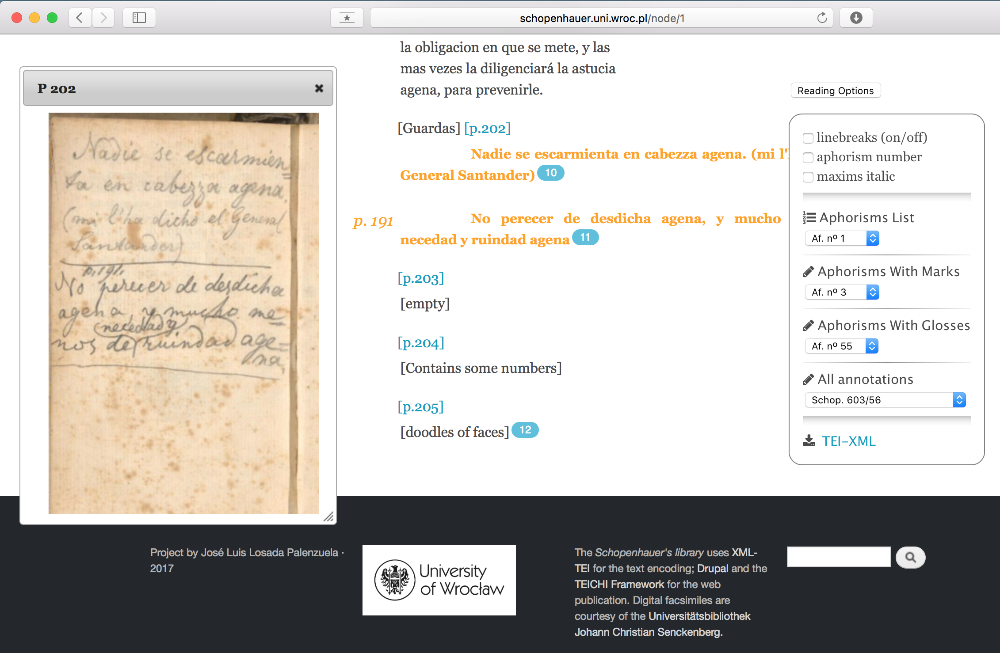

Introduction to Digital Scholarly Editions. Terminology, examples, evaluation, reference model.
☰
Content
- Frontmatter↡(1-2)
- Terminology↡(3-10)
- Digital edition↡(11-14)
- Examples↡(15-25)
- Criteria↡(26-28)
- Reference Model↡(29-48)
- References↡(49)
- Impressum↡(50)
Our subject: edition
- Different terminology,
- different traditions,
- different languages,
- different periods.
What is a Scholarly Edition
The scholarly edition's basic task is to present a reliable text
- General introduction: either historical or interpretive;
- Statements concerning the history & composition of the text;
- textual apparatus or notes documenting alterations and variant readings.
How is a Scholarly Edition done?
"a scholarly edition is one that follows scholarly method and purpose, that is undertaken with professional critical judgment and the fullest possible understanding of the relevant primary materials, and that provides clear documentary evidence of the relations and contexts of those primary materials"
Textual Criticism
~ Editionswissenschaft, Scholarly Editing, Critique génétique, Filologia d’autore, Ecdótica ~Lachmann’s method
(German tradition)

- reconstructing the (original) text based on different witnesses
- witnesses are grouped hierarchically in order to compile a genealogical tree (stemma)
- genealogical tree is based on typology of errors
- Dogmatism
Bon manuscrit
(French tradition)
- Joseph Bédier's scepticism on stemmatics;
- Edition based on the earliest or best preserved manuscript (codex optimus);
- Historical & cultural analysis of the text tradition.
Copy-text theory
(Anglo-American tradition)
- Printed edition closest to the author’s intention;
- Autograph manuscript and printed edition (combined).
Methods related to type of documents
- stemmatics: medieval and classical texts preserved in manuscripts;
- copy-text: modern print materials;
- genetics: authorial drafts and contemporary authors (edition ≃ genetic dossier).
Digital editions


A digital edition follows the requirements of a scholarly edition in consideration of the digital paradigm
"Eine digitale Edition ist dadurch bestimmt, dass sie die allgemeinen Anforderungen an eine wissenschaftliche Edition durch die Berücksichtigung der gegenwärtigen technischen Möglichkeiten und ihrer methodischen Implikationen erfüllt. Sie folgt einem «digitalen Paradigma»"
Digital scholarly editions are not just scholarly editions in digital media: digital ≠ digitized
"Wiedergabe ohne Erschließung ist keine Edition. Eine bloße Reproduktion, ein einfaches Faksimile, eine digitale Bibliothek ist keine Edition"
"Deshalb kann eine digitale Edition nicht einfach die digitale Fassung einer auch im Druck realisierbaren Edition sein – zu ihrem Wesen gehört, dass sie über die Beschränkungen der typografischen Edition hinweggeht"
A digital edition can not be printed without a loss of information and/or functionality
"Eine digitale Edition ist dadurch bestimmt, dass sie nicht ohne wesentliche Informations- und Funktionsverluste in eine typografi sche Form gebracht werden kann – und in diesem Sinne über die druckbare Edition hinausgeht."
Examples of SDE
Drama editions
Correspondence editions
Genetic editions
Collected works
Collaborative editions
Social Editions
"is to offer the text to the community not only for contributions such as annotation, comments, and translations but also for the editing of existing texts or the addition of new texts [...] The community that produces the text or enriches it can be controlled or uncontrolled"

Documentary editions
- An edition of a text based on a single document (one source vs. readings/witnesses from multiple sources).
- Recording (as many possible) features of the document.
- Displaying them with the necessary tools.
- Documentation vs. interpretation.
- Non-critical vs. critical (documents seen as misleading guides to the past).
Guidelines for quality criteria
conditions to mark a digital edition as a scholarly
- Criteria for Reviewing Scholarly Digital Editions (Institut für Dokumentologie und Editorik) (de | it | es)
- White Paper of the MLA’s Committee on Scholarly Editions (MLA)
General criteria
- Ensuring longevity (digital preservation): financial, infrastructure, open standards, obsolete interfaces.
- It must note its technological choices and be aware of their implications.
- Facilitating data sampling, reuse, and remix.
- Transparency with respect to data, methods.
- Usability of the edition.
Editorial decisions
- Scholarly, documentary edition; digital archive...?
- What data model is applied?
- Does it follow common standards (e.g. TEI guidelines)?
- Is the data modeling documented through a schema?
Reference model for digital editing

document ⤑ digital edition
- Analysis
- Modelling
- Transcription
- Encoding
- Visualization
- Publication
Analyzing
- to set document properties
- implicit → explicit
- structured (but not standardized)
- (possibly) digital (but not machine-readable)
- abstract und simplified
Outcome: a representation...

Modelling
- to set a formal model of the document.
- Standard: XML-Schema.
- Tool: Roma (webservice).
- structured and standardized.
- digital and machine-readable.
- without content (yet).
- useful for guiding encoding and visualization.
Technologies:
Outcome: a representation...
Schema RNG (snippets)
Paragraph
marks paragraphs in prose. Page break
marks the start of a new page in a paginated document. Quotation
contains a phrase or passage attributed by the narrator or author to some agency external to the text. Schema RNG (grid)
Transcribing
- to set the text in a linear form.
- Format: .txt, .doc, .odt
- Tool: text editor...
- digital and machine-readable.
- limited complexity and precision.
- less structured.
- not standardized.
Technologies:
Outcome: a text representation...
Transcribing
- all characters
- implicit: line breaks, paragraphs
- (not much more)
- special characters
- layout
- (and much more)
represented
not represented
Encoding
- to improve the transcript
- Standards: XML-TEI
- Tool: XML-Editor (oXygen, ...)
- digital and machine-readable (not so men-readable).
- structured and standardized
- the core of a digital edition
Technologies:
Outcome: a text representation...
XML-TEI (text)
XML-TEI (metadata)

Visualizing
- to represent for a reader
- Standards: CSS, XSLT, X-Path, XML-FO
- Formats: HTML, PDF, ePub
- out of a TEI source file
Technologies:
Outcome: different visualizations...
CSS stylesheets (text)
CSS stylesheets (metadata)
XSLT stylesheets
Publishing
- to be available for the public
- to set the text in the editorial context
- to interact with the edition
- Databases: eXist (XML), ...
- CMS: Drupal, Omeka, ...
- Tailor-made projects
Technologies
Publishing
Summary
References
- Lou Burnard et alii (2007),Electronic Textual Editing, MLA & TEI Consortium
- C. Macé & P. Roelli (2015), Parvum lexicon stemmatologicum.
- Elena Pierazzo (2015), Digital Scholarly Editing: Theories, Models and Methods, Ashgate Publishing
- Patrick Sahle (2013), Digitale Editionsformen, Zum Umgang mit der Überlieferung unter den Bedingungen des Medienwandels, 3 Bände, Norderstedt: Books on Demand.
- Christof Schöch (2014), Digitale Textedition mit TEI, DARIAH TEI-Tutorial.
✽